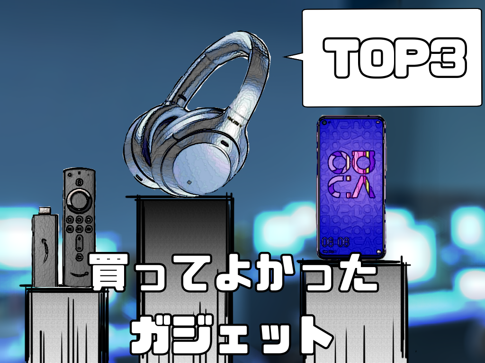
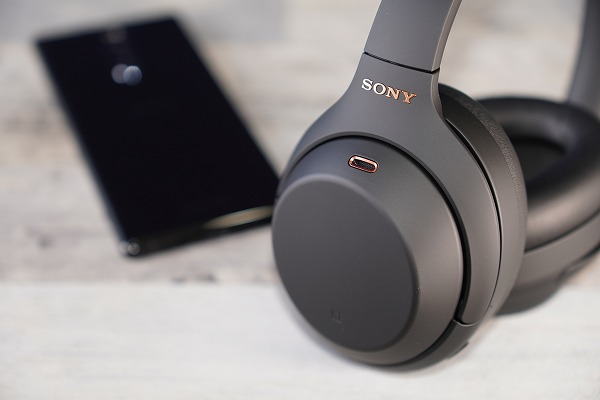

【２０２０年】勝ってよかったガジェットTOP３

おうち時間、どのように過ごしてました？私はアマプラで名作と言われている映画・アニメを定期的に見てました。そんな生活の中で買ってよかった（生活水準を上げた）がジェットをランキング形式で３つ紹介します。
第3位 【Huawei Nova5t】

ポイント
iPhone6sから乗り換え、指紋センサー必須と思っていたのでiPhone11には変えれなかった。4つのレンズを搭載したクアッドカメラにメモリ8GB、ハイエンドCPU-Kirin980を搭載、電源ボタンに指紋センサーが内蔵されて、お値段なんと3万８千円。
驚異のバッテリー持ち
バッテリー消費を抑えるためにバックグラウンドで働くアプリを片っ端から終了させてくるので、LINEの通知が来ない、または遅れる。（設定から変更できた。）
夜でも綺麗に。最高のカメラ
片手でパシャリ。それだけでここまで撮れるポテンシャルの高さ。シャッター音が上品なのもiPhoneと比べて〇。
第２位 【Amazon Fire TV Stick】
ポイント
大画面で映画が見れる！これに尽きると言いたいところだが、一押しはBluetooth接続。モニターにはスピーカーが無いものが多く、外付けしなければならない。そこでオススメなのはワイヤレスイヤホン・ヘッドホンとBluetooth接続すること。Fire TV側で遅延分映像を遅らせてくれるのでストレスなく使える。深夜での大音量での映画鑑賞はここから始まる。
プライムビデオだけじゃない
YouTubeも見れちゃいます。
第１位 【Sony WH-1000XM4】

ポイント
長時間着けていても快適な着け心地とそれを実現させてくれるバッテリー性能。ノイズキャンセリングで現実から切り離してくれる。
イコライザーでコンテンツに合わせて変化する
スマホアプリからイコライザーをイジることが可能。プリセットが予め用意されているため簡単に楽しめる。オススメのイコライザーはExcited。
まとめ
インドア派なら間違いなくお勧めできる上位２種に少し珍しいスマホ。今年はどんなガジェットと出会えるか楽しみである。